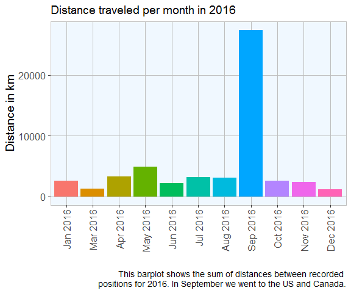

It’s no secret that Google Big Brothers most of us. But at least they allow us to access quite a lot of the data they have collected on us. Among this is the Google location history.
If you want to see a few ways how to quickly and easily visualize your location history with R, stay tuned…
The Google location history can be downloaded from your Google account under https://takeout.google.com/settings/takeout. Make sure you only tick “location history” for download, otherwise it will take super long to get all your Google data.
The data Google provides you for download is a .json file and can be loaded with the jsonlite package. Loading this file into R might take a few minutes because it can be quite big, depending on how many location points Google had saved about you.
library(jsonlite)
system.time(x <- fromJSON("Standortverlauf.json"))
## user system elapsed
## 112.52 1.12 132.59
The date and time column is in the POSIX milliseconds format, so I converted it to human readable POSIX.
Similarly, longitude and latitude are saved in E7 format and were converted to GPS coordinates.
# extracting the locations dataframe
loc = x$locations
# converting time column from posix milliseconds into a readable time scale
loc$time = as.POSIXct(as.numeric(x$locations$timestampMs)/1000, origin = "1970-01-01")
# converting longitude and latitude from E7 to GPS coordinates
loc$lat = loc$latitudeE7 / 1e7
loc$lon = loc$longitudeE7 / 1e7
This is how the data looks like now:
head(loc)
## timestampMs latitudeE7 longitudeE7 accuracy activitys
## 1 1482393378938 519601402 76004708 29 NULL
## 2 1482393333953 519601402 76004708 29 NULL
## 3 1482393033893 519603616 76002628 20 1482393165600, still, 100
## 4 1482392814435 519603684 76001572 20 1482392817678, still, 100
## 5 1482392734911 519603684 76001572 20 NULL
## 6 1482392433788 519603684 76001572 20 NULL
## velocity heading altitude time lat lon
## 1 NA NA NA 2016-12-22 08:56:18 51.96014 7.600471
## 2 NA NA NA 2016-12-22 08:55:33 51.96014 7.600471
## 3 NA NA NA 2016-12-22 08:50:33 51.96036 7.600263
## 4 NA NA NA 2016-12-22 08:46:54 51.96037 7.600157
## 5 NA NA NA 2016-12-22 08:45:34 51.96037 7.600157
## 6 NA NA NA 2016-12-22 08:40:33 51.96037 7.600157
We have the original and converted time, latitude and longitude columns, plus accuracy, activities, velocity, heading and altitude. Accuracy gives the error distance around the point in metres. Activities are saved as a list of data frames and will be explored further down. Velocity, heading and altitude were not recorded for earlier data points.
Data stats
Before I get to actually plotting maps, I want to explore a few basic statistics of the data.
How many data points did Google record over what period of time?
# how many rows are in the data frame?
nrow(loc)
## [1] 600897
min(loc$time)
## [1] "2013-09-06 19:33:41 CEST"
max(loc$time)
## [1] "2016-12-22 08:56:18 CET"
And how are they distributed over days, months and years?
# calculate the number of data points per day, month and year
library(lubridate)
library(zoo)
loc$date <- as.Date(loc$time, '%Y/%m/%d')
loc$year <- year(loc$date)
loc$month_year <- as.yearmon(loc$date)
points_p_day <- data.frame(table(loc$date), group = "day")
points_p_month <- data.frame(table(loc$month_year), group = "month")
points_p_year <- data.frame(table(loc$year), group = "year")
How many days were recorded?
nrow(points_p_day)
## [1] 1057
How many months?
nrow(points_p_month)
## [1] 39
And how many years?
nrow(points_p_year)
## [1] 4
# set up plotting theme
library(ggplot2)
library(ggmap)
my_theme <- function(base_size = 12, base_family = "sans"){
theme_grey(base_size = base_size, base_family = base_family) +
theme(
axis.text = element_text(size = 12),
axis.text.x = element_text(angle = 90, vjust = 0.5, hjust = 1),
axis.title = element_text(size = 14),
panel.grid.major = element_line(color = "grey"),
panel.grid.minor = element_blank(),
panel.background = element_rect(fill = "aliceblue"),
strip.background = element_rect(fill = "lightgrey", color = "grey", size = 1),
strip.text = element_text(face = "bold", size = 12, color = "navy"),
legend.position = "right",
legend.background = element_blank(),
panel.margin = unit(.5, "lines"),
panel.border = element_rect(color = "grey", fill = NA, size = 0.5)
)
}
points <- rbind(points_p_day[, -1], points_p_month[, -1], points_p_year[, -1])
ggplot(points, aes(x = group, y = Freq)) +
geom_point(position = position_jitter(width = 0.2), alpha = 0.3) +
geom_boxplot(aes(color = group), size = 1, outlier.colour = NA) +
facet_grid(group ~ ., scales = "free") + my_theme() +
theme(
legend.position = "none",
strip.placement = "outside",
strip.background = element_blank(),
strip.text = element_blank(),
axis.text.x = element_text(angle = 0, vjust = 0.5, hjust = 0.5)
) +
labs(
x = "",
y = "Number of data points",
title = "How many data points did Google collect about me?",
subtitle = "Number of data points per day, month and year",
caption = "\nGoogle collected between 0 and 1500 data points per day
(median ~500), between 0 and 40,000 per month (median ~15,000) and
between 80,000 and 220,000 per year (median ~140,000)."
)

How accurate is the data?
Accuracy is given in meters, i.e. the smaller the better.
accuracy <- data.frame(accuracy = loc$accuracy, group = ifelse(loc$accuracy < 800, "high", ifelse(loc$accuracy < 5000, "middle", "low")))
accuracy$group <- factor(accuracy$group, levels = c("high", "middle", "low"))
ggplot(accuracy, aes(x = accuracy, fill = group)) +
geom_histogram() +
facet_grid(group ~ ., scales="free") +
my_theme() +
theme(
legend.position = "none",
strip.placement = "outside",
strip.background = element_blank(),
axis.text.x = element_text(angle = 0, vjust = 0.5, hjust = 0.5)
) +
labs(
x = "Accuracy in metres",
y = "Count",
title = "How accurate is the location data?",
subtitle = "Histogram of accuracy of location points",
caption = "\nMost data points are pretty accurate,
but there are still many data points with a high inaccuracy.
These were probably from areas with bad satellite reception."
)

Plotting data points on maps
Finally, we are actually going to plot some maps!
The first map is a simple point plot of all locations recorded around Germany.
You first specify the map area and the zoom factor (the furthest away is 1); the bigger the zoom, the closer to the center of the specified location. Location can be given as longitude/latitude pair or as city or country name.
On this map we can plot different types of plot with the regular ggplot2 syntax. For example, a point plot.
germany <- get_map(location = 'Germany', zoom = 5)
ggmap(germany) + geom_point(data = loc, aes(x = lon, y = lat), alpha = 0.5, color = "red") +
theme(legend.position = "right") +
labs(
x = "Longitude",
y = "Latitude",
title = "Location history data points in Europe",
caption = "\nA simple point plot shows recorded positions.")

The second map shows a 2D bin plot of accuracy measured for all data points recorded in my home town Münster.
munster <- get_map(location = 'Munster', zoom = 12)
options(stringsAsFactors = T)
ggmap(munster) +
stat_summary_2d(geom = "tile", bins = 100, data = loc, aes(x = lon, y = lat, z = accuracy), alpha = 0.5) +
scale_fill_gradient(low = "blue", high = "red", guide = guide_legend(title = "Accuracy")) +
labs(
x = "Longitude",
y = "Latitude",
title = "Location history data points around Münster",
subtitle = "Color scale shows accuracy (low: blue, high: red)",
caption = "\nThis bin plot shows recorded positions
and their accuracy in and around Münster")

We can also plot the velocity of each data point:
loc_2 <- loc[which(!is.na(loc$velocity)), ]
munster <- get_map(location = 'Munster', zoom = 10)
ggmap(munster) + geom_point(data = loc_2, aes(x = lon, y = lat, color = velocity), alpha = 0.3) +
theme(legend.position = "right") +
labs(x = "Longitude", y = "Latitude",
title = "Location history data points in Münster",
subtitle = "Color scale shows velocity measured for location",
caption = "\nA point plot where points are colored according
to velocity nicely reflects that I moved generally
slower in the city center than on the autobahn") +
scale_colour_gradient(low = "blue", high = "red", guide = guide_legend(title = "Velocity"))

What distance did I travel?
To obtain the distance I moved, I am calculating the distance between data points. Because it takes a long time to calculate, I am only looking at data from last year.
loc3 <- with(loc, subset(loc, loc$time > as.POSIXct('2016-01-01 0:00:01')))
loc3 <- with(loc, subset(loc3, loc$time < as.POSIXct('2016-12-22 23:59:59')))
# Shifting vectors for latitude and longitude to include end position
shift.vec <- function(vec, shift){
if (length(vec) <= abs(shift)){
rep(NA ,length(vec))
} else {
if (shift >= 0) {
c(rep(NA, shift), vec[1:(length(vec) - shift)]) }
else {
c(vec[(abs(shift) + 1):length(vec)], rep(NA, abs(shift)))
}
}
}
loc3$lat.p1 <- shift.vec(loc3$lat, -1)
loc3$lon.p1 <- shift.vec(loc3$lon, -1)
# Calculating distances between points (in metres) with the function pointDistance from the 'raster' package.
library(raster)
loc3$dist.to.prev <- apply(loc3, 1, FUN = function(row) {
pointDistance(c(as.numeric(as.character(row["lat.p1"])),
as.numeric(as.character(row["lon.p1"]))),
c(as.numeric(as.character(row["lat"])), as.numeric(as.character(row["lon"]))),
lonlat = T) # Parameter 'lonlat' has to be TRUE!
})
# distance in km
round(sum(as.numeric(as.character(loc3$dist.to.prev)), na.rm = TRUE)*0.001, digits = 2)
## [1] 54466.08
distance_p_month <- aggregate(loc3$dist.to.prev, by = list(month_year = as.factor(loc3$month_year)), FUN = sum)
distance_p_month$x <- distance_p_month$x*0.001
ggplot(distance_p_month[-1, ], aes(x = month_year, y = x, fill = month_year)) +
geom_bar(stat = "identity") +
guides(fill = FALSE) +
my_theme() +
labs(
x = "",
y = "Distance in km",
title = "Distance traveled per month in 2016",
caption = "This barplot shows the sum of distances between recorded
positions for 2016. In September we went to the US and Canada."
)

Activities
Google also guesses my activity based on distance travelled per time.
Here again, it would take too long to look at activity from all data points.
activities <- loc3$activitys
list.condition <- sapply(activities, function(x) !is.null(x[[1]]))
activities <- activities[list.condition]
df <- do.call("rbind", activities)
main_activity <- sapply(df$activities, function(x) x[[1]][1][[1]][1])
activities_2 <- data.frame(main_activity = main_activity,
time = as.POSIXct(as.numeric(df$timestampMs)/1000, origin = "1970-01-01"))
head(activities_2)
## main_activity time
## 1 still 2016-12-22 08:52:45
## 2 still 2016-12-22 08:46:57
## 3 still 2016-12-22 08:33:24
## 4 still 2016-12-22 08:21:31
## 5 still 2016-12-22 08:15:32
## 6 still 2016-12-22 08:10:25
ggplot(activities_2, aes(x = main_activity, group = main_activity, fill = main_activity)) +
geom_bar() +
guides(fill = FALSE) +
my_theme() +
labs(
x = "",
y = "Count",
title = "Main activities in 2016",
caption = "Associated activity for recorded positions in 2016.
Because Google records activity probabilities for each position,
only the activity with highest likelihood were chosen for each position."
)

sessionInfo()
## R version 3.3.2 (2016-10-31)
## Platform: x86_64-w64-mingw32/x64 (64-bit)
## Running under: Windows 7 x64 (build 7601) Service Pack 1
##
## locale:
## [1] LC_COLLATE=English_United States.1252
## [2] LC_CTYPE=English_United States.1252
## [3] LC_MONETARY=English_United States.1252
## [4] LC_NUMERIC=C
## [5] LC_TIME=English_United States.1252
##
## attached base packages:
## [1] stats graphics grDevices utils datasets methods base
##
## other attached packages:
## [1] raster_2.5-8 sp_1.2-3 ggmap_2.6.2 ggplot2_2.2.0
## [5] zoo_1.7-13 lubridate_1.6.0 jsonlite_1.1
##
## loaded via a namespace (and not attached):
## [1] Rcpp_0.12.8 plyr_1.8.4 bitops_1.0-6
## [4] tools_3.3.2 digest_0.6.10 evaluate_0.10
## [7] tibble_1.2 gtable_0.2.0 lattice_0.20-34
## [10] png_0.1-7 DBI_0.5-1 mapproj_1.2-4
## [13] yaml_2.1.14 proto_1.0.0 stringr_1.1.0
## [16] dplyr_0.5.0 knitr_1.15.1 RgoogleMaps_1.4.1
## [19] maps_3.1.1 rprojroot_1.1 grid_3.3.2
## [22] R6_2.2.0 jpeg_0.1-8 rmarkdown_1.2
## [25] reshape2_1.4.2 magrittr_1.5 codetools_0.2-15
## [28] backports_1.0.4 scales_0.4.1 htmltools_0.3.5
## [31] assertthat_0.1 colorspace_1.3-2 geosphere_1.5-5
## [34] labeling_0.3 stringi_1.1.2 lazyeval_0.2.0
## [37] munsell_0.4.3 rjson_0.2.15